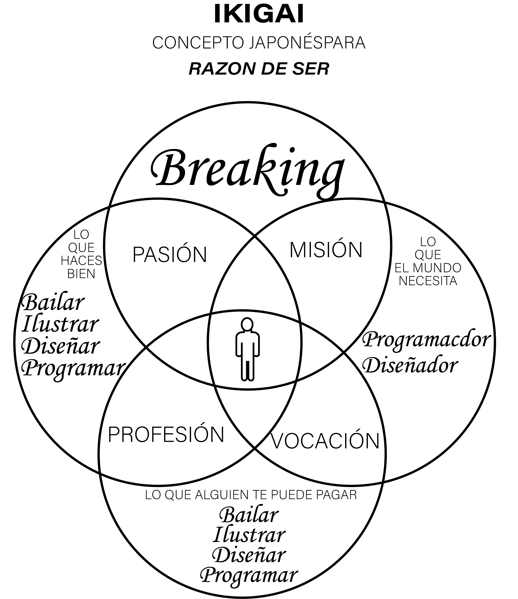
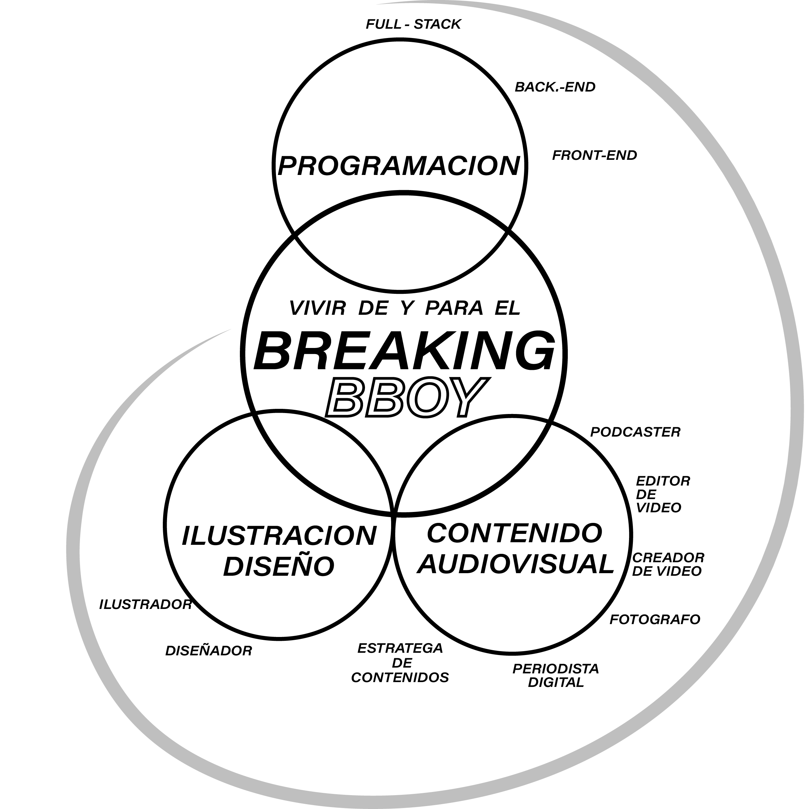
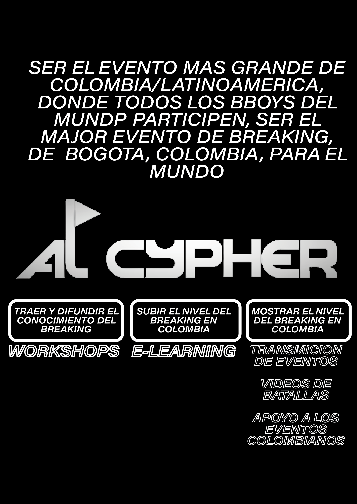
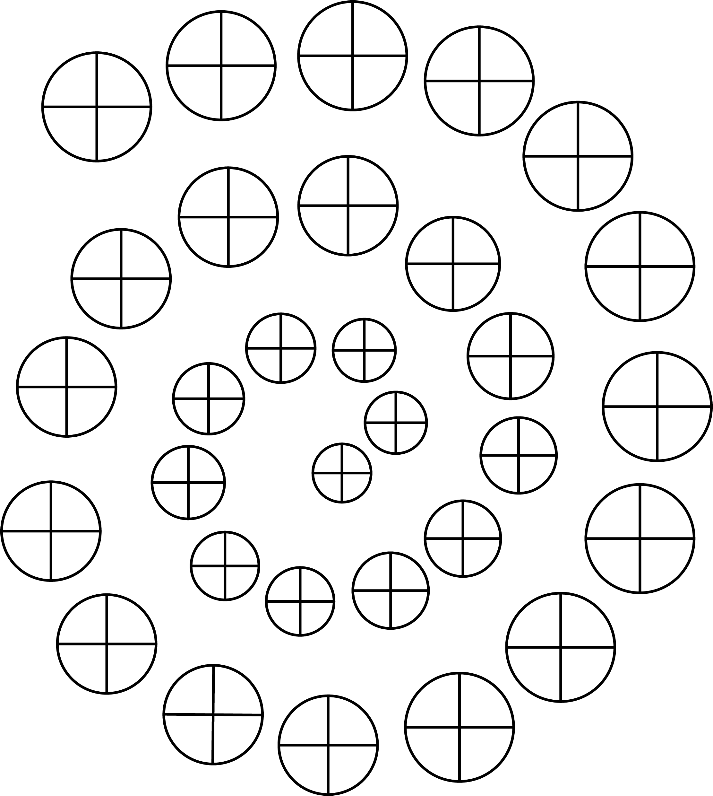

- Premisa
- Qué es lo que tú crees acerca de esta categoría. Por ejemplo, en temas de dinero, hay quienes piensan que el dinero es limitado, es malo, o que los ricos son avariciosos. Identifica todo aquello que tú crees sobre la categoría, y redáctalo.
- Vision
Como ves esta categoría en su estado ideal en tu vida. Vete de boca. Piensa a lo grande. Pregúntate: ¿Cómo quieres que se sienta esta área de tu vida?. En lo personal, aquí es donde más imágenes y referencias añadí; donde más me explayé.
- Proposito
- Por qué quieres lograr lo que quieres lograr. Justifica el motivo por el cual lo quieres. Es como la típica pregunta de colegio: “Justifica tu respuesta.”.
- Estrategia
- El plan de acción. Qué decisiones vas a tomar para lograr la Visión de esa Categoría. En esta sección añadí que me comprometía a renunciar para lograr lo que deseaba. Muchas veces no es tanto que nuevas cosas tenemos que hacer, sino qué cosas debemos dejar de hacer a corto plazo para lograr lo que deseamos a largo plazo.
11 de octubre de 2022
vision de vida / carrera profesional
   